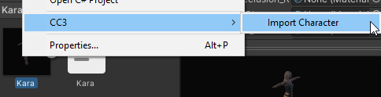
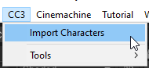
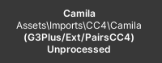
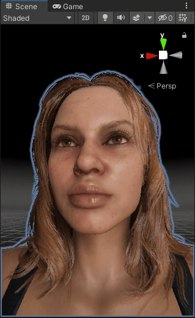

Usage
Initial Import Into Unity
In Character Creator, or iClone prepare your character as you see fit.
In Character Creator export the character using Export -> FBX (Clothed Character).

Select the following options in the export window (you may need to scroll down to see all options).
Target tool preset: Unity 3D, select: Current Pose, Delete Hidden Faces, Merge Beard and Brows into one object and Bake Diffuse and Specular maps from Digital Human Hair Shader.

Click Export to begin the export process.
In iClone export the character using Export -> Export FBX…

Select the following options in the export window.
Target tool preset: Unity 3D, select: Export Range = All, Delete Hidden Faces, Merge Face Hair to One Object.

Click Export to begin the export process.
In Microsoft Windows open the file explorer and navigate to the export directory. In your Unity 2020.3 or above project browser, navigate to the folder in your project where you will be placing your imported character.
Now drag the <name>.fbx and <name>.json files & the textures and <name>.fbm (if present) folders from Windows file explorer into the project browser’s target folder of your Unity project.

Opening The Import Tool
To open the import tool, you can right click on the <name>.fbx avatar
From the right click menu select CC3 → Import Character
Alternatively, you can open the import tool from the top menu bar (CC3 → Import Characters)
This will open the main tool window (by default this will be docked next to the Scene Hierarchy View window – it is shown here undocked).

The import tool will actively detect all of the valid Character Creator 3 characters that are contained in the Unity project and display them vertically on the left hand side of the tool window.
If your character is not displayed (or if no right click menu option is available to open the import tool) then please ensure that all of the exported data from CC3 has been dragged into the Unity project browser (there must be at least the .fbx and .json files and a textures folder containing a subfolder with the same name as the .fbx asset).
Beginning The Import
Firstly ensure the character you wish to process is currently selected by clicking on the character icon (on the left hand side). The currently selected character will be shown as follows.
The selected character is now ready to be processed. The following options will be initially available:
Initial Processing
|
Default processing will set up the character with materials using the system default shaders that ship with Unity - This should only ever be used as a draft import. |
|
High Quality processing will set up the character with materials using a custom ShaderGraph which replicates the visual quality of CC3 as closely as possible. |
|
This option is only available with HDRP and will use a more complex shader for a better result using ‘Higher Quality’ processing. |


To begin processing click the appropriate button, Unity will then process the character and write a log file in the same directory as the .fbx file.
Once processing is complete the tool window will be updated to reflect that.. The processed character icon will change color (Grey for Default processing, Green for HQ processing and Orange for Baked processing).
Additionally, the status text will be updated with the type of processing that has been performed (highlighted below).

Once the (High Quality) processing has been completed, a prefabs directory will be created in the same directory as the imported character .fbx file and a unity prefab of the imported character will be placed into it.
Several further processing options will then become available.
Baking
Baking is the most performance friendly option, whilst maintaining high visual quality.
|
Bake will create and apply new materials which have consolidated all the texture influences into as simple a set of textures as possible to enhance performance. |
|
This option determines wether materials with a custom ShaderGraph shader or the system default shaders are used in the baked output. |
|
This option controls wether the baked output is written to a new prefab <name>_baked (in the same directory as the initialally created prefab) or overwrites the initially created prefab with new materials and textures. |


The Baking workflow is show in the video below:
Two pass hair shader
|
The 2Pass option will apply two materials to the hair meshes (and thus use two material passes). Two pass hair is generally higher quality, where the hair is first drawn opaque with alpha cutout and the remaining edges drawn in softer alpha blending, but can come at a performance cost. |

After two pass hair has been generated, the character prefab will also be updated with the two pass hair materials (for the original HQ prefab or the baked version where a new prefab wasn’t created). If you are using a separate baked prefab (the default) then re-baking the character will update the baked prefab with the two pass materials.
Animations
|
Animations will process all of the animations contained in the .fbx and conform them to Unity’s X,Y,Z co-ordinate system. |

This will also create a default animator controller.
Post Processing

After processing has completed, the output character can be inspected in a preview scene by pressing the ‘Preview Scene’ button. This will open a new scene with neutral lighting; if your current scene is marked as changed then you will be prompted to save the current scene before changing to the preview scene.

The objects, materials and textures used in the model can be easily inspected from the hierarchical tree view. Selecting any of the items in the tree viewer will select them within your Unity project and display them in the inspector.

If ‘Select Linked’ is checked (by default this is checked) then when a material is selected then all others with common properties are also selected, displaying all members of the selected group in the inspector.
The ‘selectable groups’ are ‘Skin materials’, ‘Eye materials’, ‘Eye occlusion’ and ‘Teeth materials’ This will multiple select all of the materials associated with the ‘selectable group’ and present all of the common attributes in the inspector window.
This allows the simultaneous property adjustment of ‘like’ materials. For example selecting eye materials will allow the simultaneous adjustment of both left and right eyes.

Example adjustment – working zoomed in on one eye will also update the other eye for consistency:

Tools Menu
The CC3 → Tools menu can be used to further manipulate the character. Before using any option here make sure the character you wish to manipulate is selected in the scene (blue outline)

Reverse Triangle Order
This option is occasionally needed to correct any anomalies with alpha blended materials. This principal use of this is to ensure that hair materials are rendered in the proper order i.e. from inside to out. To use this, select the hair mesh of a model in the scene and use the menu option CC3 -> Tools -> Reverse Triangle Order.
Prune Blend Shapes
If a large number of blend shapes are exported with the character, then this option will cull those blend shapes which make a negligible contribution to the deformation of the model, leaving only those with a tangible effect.
Open or Close Character’s Mouth/Eyes
This is useful for inspecting the character to ensure there are no hidden problems with the mouth and eyes.
The eye menu CC3 → Tools → Eye enables movement of the eye direction for a detailed inspection of the eye.